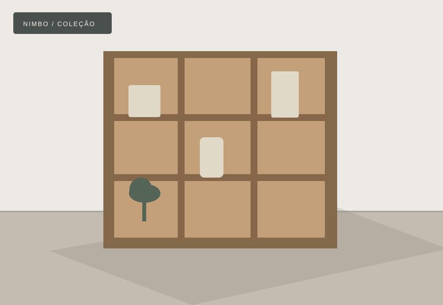
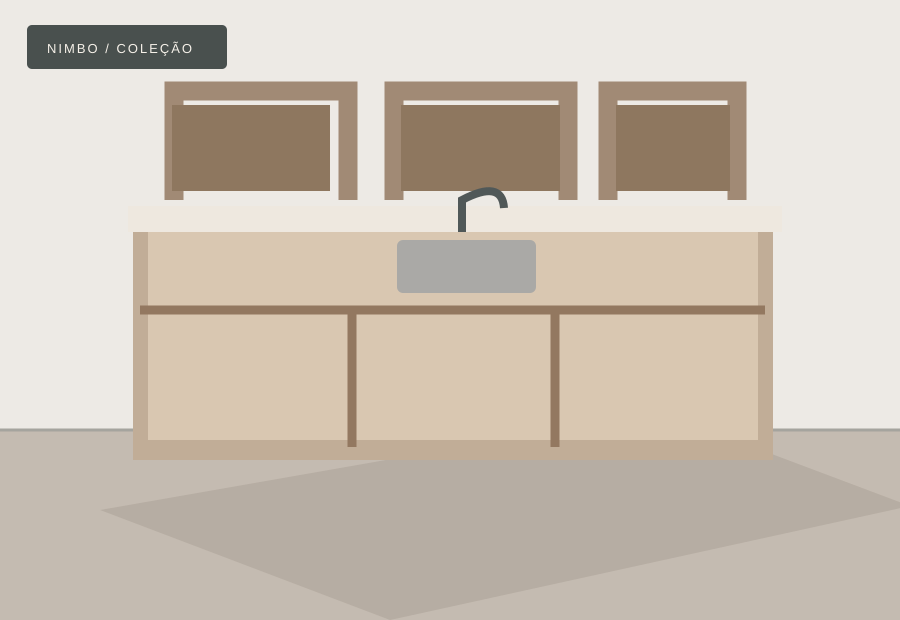
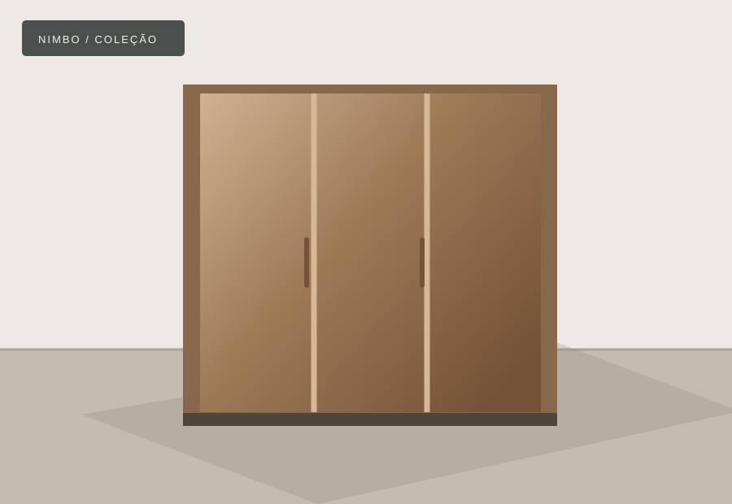
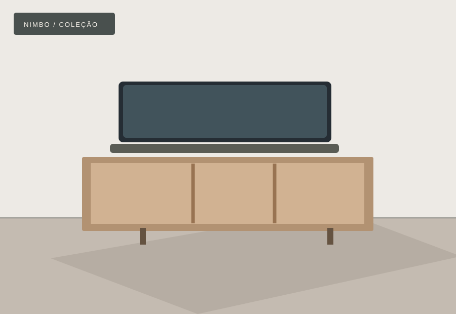
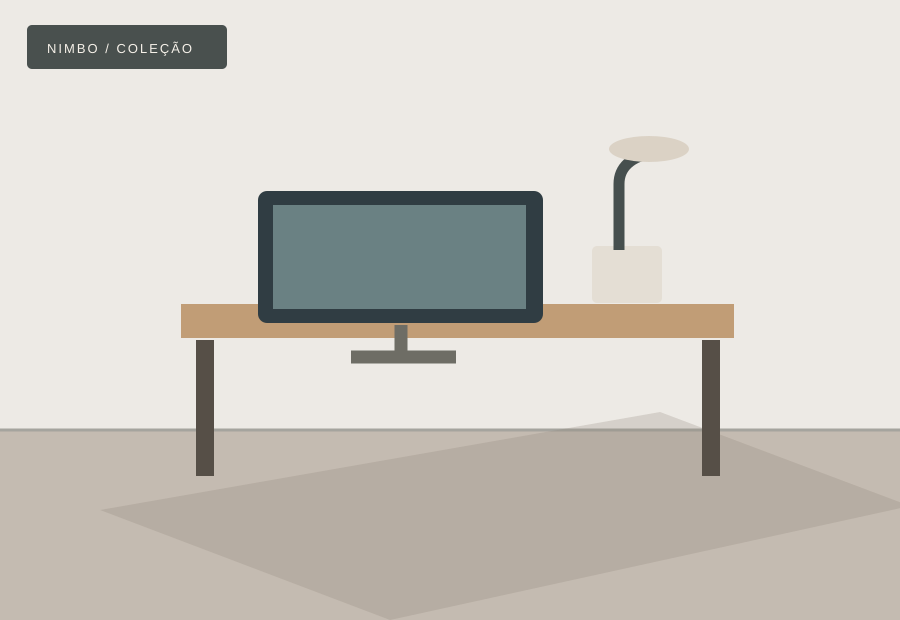
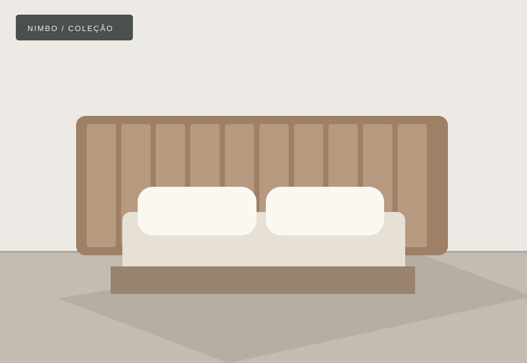

Nº 01SalaEstante modular
Linha Horizonte
Nichos abertos, superfícies contínuas e composição modular.
Base hipotética: R$ 5.400Formas precisas, materiais sensíveis e detalhes que pertencem ao seu jeito de viver. Uma experiência digital que transforma inspiração em escolhas.

Seis ideias para ambientes distintos. Explore por espaço, conheça proporções e experimente composições de acabamento.
6 peças disponíveis

Nº 01SalaNichos abertos, superfícies contínuas e composição modular.
Base hipotética: R$ 5.400
Nº 02QuartoPortas verticais e organização interior.
Base hipotética: R$ 7.900Frentes limpas e armazenamento adaptável.
Base hipotética: R$ 8.600
Nº 04SalaVolumes leves e distribuição funcional.
Base hipotética: R$ 4.100
Nº 05EscritórioSuperfície ampla e módulos de apoio.
Base hipotética: R$ 3.700
Nº 06QuartoRevestimentos e linhas discretas.
Base hipotética: R$ 2.900Nenhuma peça encontrada. Experimente outra palavra ou categoria.
Selecione até duas peças para comparar especificações.
Uma demonstração de configuração de catálogo. Compare materiais e dimensões com valores de referência inventados para ilustrar a interface.
Preço calculado com valores e fatores ilustrativos, sem validade de orçamento. A imagem representa o modelo-base e não muda fisicamente de acordo com a configuração.
A navegação traduz uma ideia complexa em etapas simples: encontrar, explorar, personalizar e comparar.
Filtros e pesquisa que ajudam cada pessoa a navegar pelo catálogo sem ruído.
Dimensões, acabamento e estimativas hipotéticas apresentados com transparência.
Comparação estruturada para reduzir a fricção entre opções.
A Nimbo demonstra possibilidades de apresentação para mobiliário. A USBRIN pode desenvolver um site com identidade própria para seu negócio.
Conhecer USBRIN Studio ↗